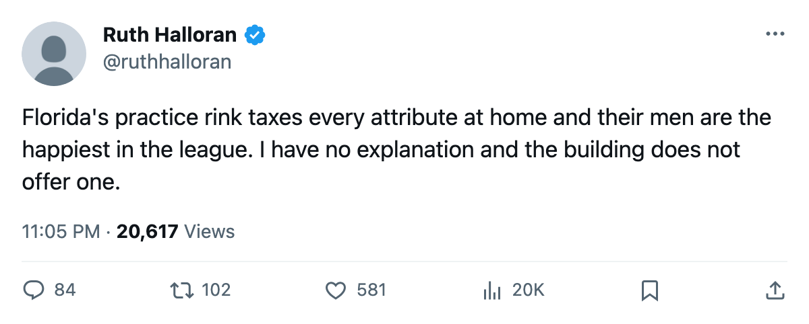
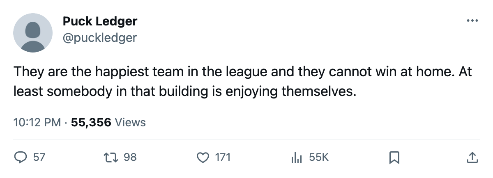

Five at -18, one at 98.8: the building does not pick the room
Florida runs equipment, workout and practice at the floor. Three of its men sit at 100 morale. The locker room the tuning file says governs morale is switched off.
 Ruth HalloranBusiness of hockey · The Building
Ruth HalloranBusiness of hockey · The Building
 Florida Panthers runs equipment at level 0, workout at level 0 and practice at level 0. Each sits at the floor of its own scale: the tuning file gives -6 to equipment, -5 to workout and -6 to practice at the bottom level, the worst modifier any of the three can carry. Travel at level 3 (-1) is the only track above the floor. Five clubs share a live sum of -18, and only
Florida Panthers runs equipment at level 0, workout at level 0 and practice at level 0. Each sits at the floor of its own scale: the tuning file gives -6 to equipment, -5 to workout and -6 to practice at the bottom level, the worst modifier any of the three can carry. Travel at level 3 (-1) is the only track above the floor. Five clubs share a live sum of -18, and only  Los Angeles Kings is worse at -19.
Los Angeles Kings is worse at -19.
The Bureau's Morale Scale puts Florida at 98.8, the highest of all 30 clubs.  Colorado Avalanche sits second at 97.3, and
Colorado Avalanche sits second at 97.3, and  Toronto Maple Leafs and
Toronto Maple Leafs and  Tampa Bay Lightning tie for third at 97.0.
Tampa Bay Lightning tie for third at 97.0.
The room that should explain it is switched off
The tuning file names the locker room as the track that moves morale. Florida carries the highest locker room in the league at level 4, which maps to level 5 on the file's own scale, a modifier of +0, par. The locker room is switched off in this build. A level 4 room does nothing to morale, and neither would a level 9. The 98.8 comes from somewhere the building cannot account for.
Three Florida players sit at 100 individually.  Olli Jokinen85 and
Olli Jokinen85 and  Kristian Huselius75 carry the club's top forward minutes at 20.4 and 20.6 a night. Mikael Samuelsson has played 6 games at 12.0. The two men who skate the most for Florida appear content, and the building they skate in does not help them.
Kristian Huselius75 carry the club's top forward minutes at 20.4 and 20.6 a night. Mikael Samuelsson has played 6 games at 12.0. The two men who skate the most for Florida appear content, and the building they skate in does not help them.
Five clubs, the same sum, a 13-point spread in the room
 Ottawa Senators has the league's worst morale at 83.8 and a live sum of -15, three points above Florida.
Ottawa Senators has the league's worst morale at 83.8 and a live sum of -15, three points above Florida.  Columbus Blue Jackets shares Florida's -18 and carries the second-worst morale at 86.0. Colorado Avalanche runs a live sum of -14 and sits at 97.3. There is no line through the scatter. The building does not predict the feeling.
Columbus Blue Jackets shares Florida's -18 and carries the second-worst morale at 86.0. Colorado Avalanche runs a live sum of -14 and sits at 97.3. There is no line through the scatter. The building does not predict the feeling.
Five clubs carry the same live sum of -18, built differently, and the morale spread is nearly 13 points.
| club | equipment | workout | practice | travel | morale |
|---|---|---|---|---|---|
 Mighty Ducks of Anaheim Mighty Ducks of Anaheim | 0 (-6) | 1 (-4) | 1 (-4) | 1 (-4) | 88.2 |
| Columbus Blue Jackets | 0 (-6) | 1 (-4) | 1 (-4) | 1 (-4) | 86.0 |
| Florida Panthers | 0 (-6) | 0 (-5) | 0 (-6) | 3 (-1) | 98.8 |
 Minnesota Wild Minnesota Wild | 0 (-6) | 1 (-4) | 2 (-2) | 0 (-6) | 90.9 |
 St. Louis Blues St. Louis Blues | 1 (-4) | 1 (-4) | 0 (-6) | 1 (-4) | 91.8 |
Florida is the only club in that group at level 0 on three tracks rather than two. The others each hold one track above the floor where Florida carries -6, -5 and -6 simultaneously. Their practice at level 0 gives a modifier of -6 to every attribute at home, and the on-ice facilities term for the average Florida player reads -3.53. They went 15-22 at home, 22 losses in their own rink, tied with Minnesota Wild and behind only  Calgary Flames (10-24) and
Calgary Flames (10-24) and  Chicago Blackhawks (12-23). The modifier is on the sheet. The morale is on the sheet. Neither explains the other.
Chicago Blackhawks (12-23). The modifier is on the sheet. The morale is on the sheet. Neither explains the other.
The one room they upgraded feeds nobody outside
The league files no news for a facility upgrade. The only visible evidence is a difference between two saves, and the record has held since December. Florida moved scouting from 0 to 1 between 2004-12-22 and 2004-12-24. The scouting room feeds only the trade valuation, a number nobody outside a club can see.
Of the 11 upgrades the record shows since December, 8 hit a live track. Two hit scouting, Florida's and  Vancouver Canucks's. One hit the locker room, which is switched off. Florida and Vancouver are the only two clubs in the league that spent a facility upgrade on a room that moves nothing a rating model reads.
Vancouver Canucks's. One hit the locker room, which is switched off. Florida and Vancouver are the only two clubs in the league that spent a facility upgrade on a room that moves nothing a rating model reads.
No live track in Sunrise has been touched.
Florida Panthers pays $51.07M against $67.60M in revenue, for $13.34M in profit. Each point costs $0.70M. Attendance sits at 14,986 at $79 a seat. The building earns. The building taxes every attribute by 6 at home. Boris Van Ryswyk's club sits 25-31-13, 73 points, last in the Southeast, on a 3-game losing streak. The men in Sunrise are the happiest in the league at 98.8, and three of the ten players who sit at 100 individually wear Florida sweaters.

